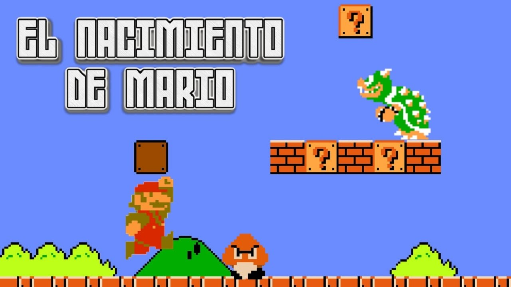
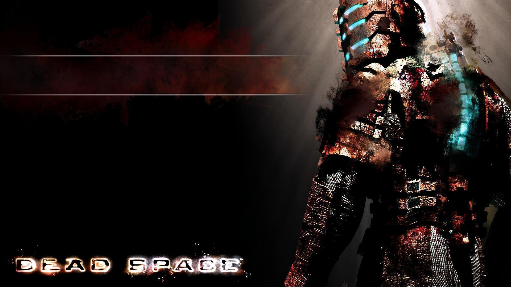
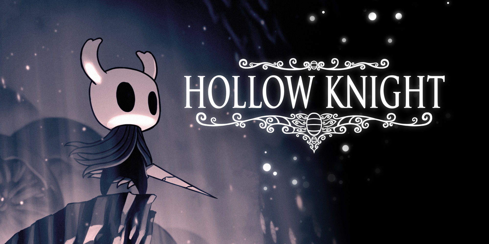
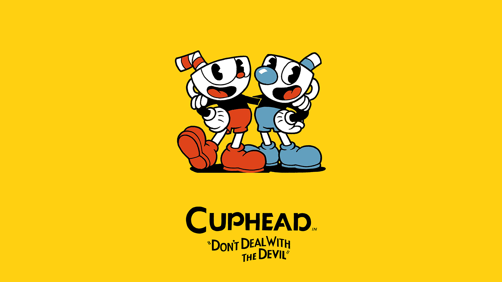

Its mario time!
Super Mario Bros. o Super Mario Brothers (スーパーマリオブラザーズ Sūpā Mario Burazāzu?, lit. Súper Hermanos Mario) es un videojuego de plataformas, diseñado por Shigeru Miyamoto, lanzado el 13 de septiembre de 1985 y producido por la compañía Nintendo, para la consola Nintendo Entertainment System (NES). El juego describe las aventuras de los hermanos Mario y Luigi, personajes que ya protagonizaron el arcade Mario Bros. de 1983. En esta ocasión ambos deben rescatar a la Princesa Peach del Reino Champiñón que fue secuestrada por el rey de los Koopas, Bowser. A través de ocho diferentes niveles de juego, los jugadores pueden controlar a alguno de los dos hermanos y deben enfrentarse finalmente tras los niveles correspondientes de cada mundo a los monstruos de cada castillo para liberar a Peach.
Super Mario Bros. fue el juego que popularizó al personaje de Mario, convirtiéndolo en el ícono principal de Nintendo, y uno de los personajes más reconocidos de los videojuegos, así como su hermano menor Luigi. Además, presentó por primera vez a la Princesa Peach Toadstool, Toad, Bowser, entre otros personajes. Este juego es considerado el primer videojuego de plataformas de desplazamiento lateral de Nintendo y se ha convertido en un hito debido a la trascendencia de su diseño y papel en la industria de los videojuegos. Su lanzamiento fue el primer gran récord de ventas posterior a la crisis de la industria de los videojuegos de 1983 (alcanzando más de 10 millones de cartuchos vendidos), por lo que popularizó, en cierta manera, a la consola NES. En 1999 fue reconocido como uno de los videojuegos más vendidos de todos los tiempos.2 Shigeru Miyamoto su creador, relata la existencia de Super Mario Bros. debido a que cuando viajaba en un tren le gustaba mirar por la ventana, y se imaginaba que estaba allí saltando afuera.

Dead Space? Nope!
La historia se desarrolla en el interior de la extractora espacial USG Ishimura. La tripulación ha sido masacrada por «necromorfos», monstruos creados por un virus alienígena. El protagonista, Isaac Clarke, tiene que enfrentarse a los «necromorfos» en solitario. La acción se desarrolla como un shooter en tercera persona con un control con claras influencias de Resident Evil 4.1 La ambientación recuerda intensamente la película Alien.2
El objetivo de la mayoría de las misiones es recorrer las cubiertas del Ishimura para recoger elementos y llevarlos a ciertos puntos según las indicaciones que otros personajes secundarios dan a Clarke a través de su enlace de radio. Durante estos recorridos los enemigos nos atacan de formas inesperadas y en grupos cada vez más numerosos. El combate con los enemigos se realiza con una técnica llamada «desmembramiento estratégico»: los enemigos deben ser descuartizados para conseguir eliminarlos.3 Se hace necesaria una gran precisión ya que hay que arrancar las extremidades al enemigo. Por ejemplo, los enemigos sin piernas seguirán arrastrándose hacia nosotros más lentamente usando los brazos.

La noche puede ser hermosa... o no.
El modo de juego de Hollow Knight se enfoca principalmente en exploración, plataformas y combate. Los jugadores exploran un gran mundo interconectado usando una variedad de movimientos y técnicas de combate. Al clásico estilo Metroidvania, hay áreas del mundo en el que los jugadores no pueden acceder hasta que obtienen algún objeto particular o habilidad. Los mapas para cada área se deben comprar a un comerciante que generalmente se encuentra escondido en esa área, y el jugador también puede comprar mejoras que permiten colocar marcadores en el mapa o permiten revelar partes del mapa a medida que van explorando. El guardado del juego solo puede hacerse en los bancos para descansar que se encuentran esparcidos por todo el reino.
El combate del videojuego se centra en el uso del aguijón, un arma que se asemeja a una espada, con el que se puede golpear a los enemigos desde arriba, por debajo o por la izquierda o derecha. El aguijón puede ser mejorado para que haga más daño a medida que se progresa en el videojuego y también puede adquirir ataques especiales acumulando energía. Muchas áreas tienen un jefe que el jugador deberá derrotar para continuar la aventura, y hay un número de subjefes que dejan caer recompensas o mejoras útiles. Los enemigos derrotados dejan caer Geo, una moneda que el jugador puede usar para comprar objetos de los comerciantes. Golpear enemigos repetidamente genera ALMA al jugador, un recurso que puede ser usado para curarse del daño recibido o lanzar habilidades especiales como hechizos de largo alcance y explosiones.

Don't deal with the devil
Cuphead y Mugman eran dos hermanos que vivían juntos bajo la supervisión de su abuelo: The Elder Kettle. Un día ellos entraron al casino del Diablo que estaba dirigido por King Dice. Deciden entrar y como ellos estaban ganando muchas partidas, El Diablo les dijo que si ganaban en esta ronda estos serian dueños del casino de lo contrario se adueñaría de sus almas. Cuphead cegado por la ambición aceptó el reto y perdió. Los hermanos le suplicaron al diablo no llevarse sus almas y este les propuso que si le llevan los contratos de sus deudores al Diablo, las conservarán.
Después de haber pasado innumerables aventuras estos llegan a la caverna del diablo en donde se enfrentarán a los lacayos de King Dice. Tras derrotarlos, El Diablo nos preguntará si queremos unirnos a su equipo. Al aceptar, ambos hermanos serán convertidos en sus versiones malvadas. Al negarse, es el mismo diablo que nos retará a otro duelo.
Al derrotarlo destruyen todos los contratos de almas y todos los habitantes de Inkwell Island volverán a la vida y Cuphead y Mugman se convierten en los nuevos héroes.